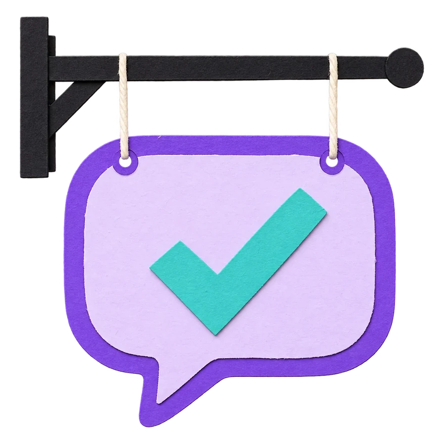

Open source · MIT · Official Cloud API
WhatsApp AI agents,
defined in code
An open source agent that answers your customers on the official WhatsApp Cloud API. It runs the tools you write in TypeScript against your own database, and anyone on your team can take over a chat from the inbox.
Works on Meta's free test number.

Features
The WhatsApp plumbing
is already built
Signed webhooks, the 24-hour service window, opt-outs, handoff and a test harness come with it. You write the business logic.
Agents in TypeScript
defineAgent, defineTool and hooks in TypeScript. Tools get the customer, memory, buttons, location pins and handoff.
Answers from your docs
Upload PDFs, text or URLs, searched with pgvector so replies stay on what you offer. Voice notes are transcribed and photos read, too.
Human handoff
The agent escalates on your rules. You reply from the inbox and hand control back. The 24-hour window is enforced for you.
Test before you go live
The dashboard simulator runs the same agent. Unit-test agents with a mock model, no WhatsApp or API key needed.
One file
Your agent is
one file
Add a tool and it shows up in the dashboard, where the business switches it on. Built-ins cover knowledge search, leads, booking requests, opening hours, location and handoff.
- Hooks:
beforeReply,afterReply,onHandoff - OpenAI by default, any AI SDK model, or any OpenAI-compatible API
- Two worked examples with tests: restaurant booking and order lookup
import { builtin, defineAgent, defineTool } from '@bluetick/agent' import { z } from 'zod' const orderStatus = defineTool({ description: 'Look up an order for this customer', input: z.object({ orderId: z.string() }), run: ({ orderId }, ctx) => getOrder(orderId, ctx.customer.phone), // your API }) export default defineAgent({ tools: { orderStatus, ...builtin.all() }, hooks: { onHandoff: ({ reason }) => notifyTeam(reason), }, })
Self-host
Host it
yourself
A Next.js app and Postgres with pgvector. Run it on Vercel with Neon or Supabase, or on any Node host.
- Meta's official WhatsApp Cloud API
- Webhook signatures checked; every message stored
- One admin password; no accounts to manage
git clone https://github.com/voirlabs/bluetick.git cd bluetick && pnpm install docker compose up -d # Postgres + pgvector cp apps/web/.env.example apps/web/.env # add your keys pnpm db:setup pnpm dev # http://localhost:3000
Clone and configure
Postgres, an OpenAI key and an admin password.
Describe your business
The setup assistant drafts the agent; edit hours, location and rules.
Connect WhatsApp
Paste the webhook URL into your Meta app and send a test message.